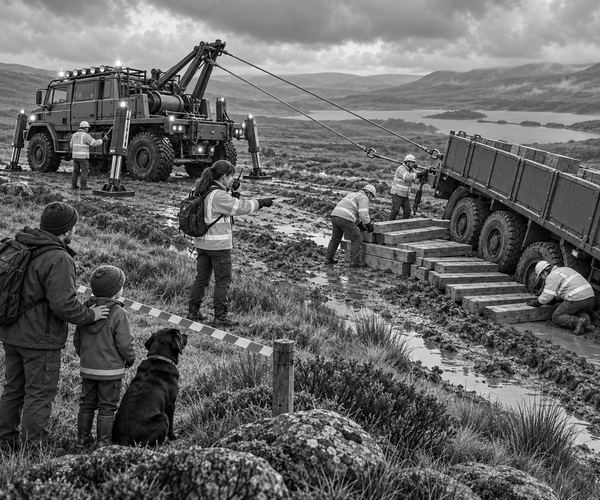

Rain drummed on the moor all night.
By morning, the clouds had begun to lift.
Ranger Mia had an important delivery to make.
Her trailer carried batteries and warm blankets.
The supplies were for a radio station high on the hill.
Tom and Scout rode safely with Dad in the escort 4x4.
The convoy followed a narrow stone track.
Puddles flashed beneath the wheels.
Mia drove slowly.
She knew that rain could wash soil away from the edge.
Then the left trailer wheel dropped.
THUMP!
Mia stopped at once.
The truck stayed on the track.
But the trailer leaned into a deep muddy rut.
Scout gave one worried woof.
Dad parked far back.
He took Tom and Scout behind a strong safety barrier.
“Can Mia pull it out now?” asked Tom.
Dad shook his head.
“First, the team must stop it leaning farther.”
Ranger Mia placed strong blocks against the trailer wheels.
A smaller truck arrived.
The crew carefully removed the boxes from the high side.
They stacked them on firm ground.
The trailer became lighter.
It also became less top-heavy.
Balance fact: A high load raises a vehicle's centre of gravity. Removing the upper cargo can make a leaning trailer steadier.
Next came Brutus, the six-wheel recovery truck.
It stopped on solid stone.
Four metal legs pressed down around it.
The legs helped Brutus stay firm.
The crew fitted two winch lines.
One line ran to the front of the trailer.
It would pull the trailer along the track.
The second line ran to the high side.
It would stop the trailer tipping farther.
Everyone moved outside the marked cable zone.
Mia checked both hooks.
She checked both lines.
Then she checked them again.
Winch fact: A recovery cable can pull with enormous force. Trained crews keep people far away from a tight cable.
The sunken wheels still needed a path.
Workers carried thick wooden beams to the rut.
They built the beams into wide steps.
The bottom step sat beside the tyre.
The highest step reached the firm track.
Ranger Mia lifted her radio.
“Side winch ready?”
“Ready.”
“Front winch ready?”
“Ready.”
Both cables tightened.
The side winch held the trailer steady.
The front winch pulled gently.
The sunken tyre touched the first wooden step.
Cre-e-eak.
Up it climbed.
The second tyre followed.
The trailer became straighter.
Tom watched from behind the barrier.
“It is standing up again!” he said.
The wheels climbed the final beam.
Then they rolled onto the firm stone track.
Mia raised both hands.
Stop!
The crew made the winch lines loose.
They checked the tyres, trailer and track.
Nothing was bent or broken.
The boxes were loaded again, low and even.
The convoy took a safer route around the washed-out edge.
At last, the hilltop radio mast appeared.
The station crew cheered.
Their batteries and warm blankets had arrived.
Tom patted Scout.
“Brutus did not use one giant tug,” he said.
“It used two careful pulls.”
Scout wagged his tail.
The tilting trailer rescue was complete.
1. Why did the crew remove the upper boxes?
2. What did the side winch do?
3. What helped the wheels climb out of the rut?